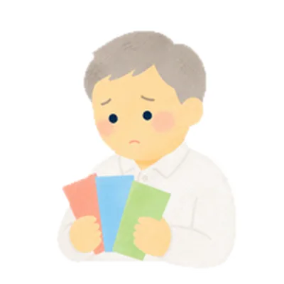

通学に
働きながらの
答えスクーリングは、
日本マンパワーの
この
通信と
引っ越しや
答え

サニー先生入学金なし・教材費こみで39.6万円。
実質＝給付金で
この
運営者は
ほかの
修了の
通信の
平均60点以上
同社の
スクーリングの
76時間以上
修了認定試験は
出典：日本マンパワーの
よく
通学に
働きながらの
答えスクーリングは、

できれば、
通う
答えオンラインの

振り
休んだ回を
答え全国どの
横に

くわしく
一般受講料396,000円
専門実践教育訓練給付制度の
最大80%
モヤン入学金が

サニー先生の
公式サイト

くわしく
通信教育
スクーリングは、
期間は
オンラインの
いまの
公式サイト
くわしく
モヤン休んだら、
全国どの
何度でも
通学と
モヤン引っ越しが
サニー先生の
公式サイト

くわしく
学科・実技試験の
グループワーク・
資格を
公式サイト

くわしく
説明会で
PR広告リンクです
よく

この
キャリコン学びピクニック運営者
3児の
数字や
出典
学校の
学校の
受講を